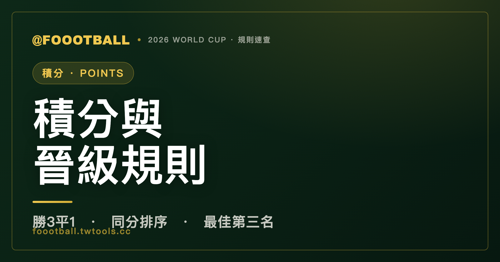

世界盃積分怎麼算？2026 同分排序規則，FIFA 把順序整個改了
世界盃小組賽勝 1 場得 3 分、平手得 1 分、輸球 0 分。同分時，2026 的排序順序大改：先看『同分球隊之間的對戰成績』（對戰積分→對戰淨勝球→對戰進球），再看全部比賽的淨勝球與進球，接著比公平競賽（紀律）分數，最後用 FIFA 排名定生死——抽籤已經完全取消。

積分本身很簡單：贏球 3 分、平手 1 分、輸球 0 分。每隊踢 3 場小組賽，最多 9 分。真正會讓人看不懂的，是「同分的時候到底誰排前面」——而 2026 年，FIFA 把這套排序規則的順序整個翻了過來，連用了幾十年的「抽籤」都拿掉了。這篇把新規則一條條講清楚。
先講結論：2026 改了什麼
過去（包含卡達 2022）的同分排序，是先比「全部比賽的總淨勝球」。這套規則有個被詬病已久的漏洞：你可能在對戰中輸給了某支球隊，卻因為在別場狂灌、總淨勝球比較漂亮，反而排在那支贏你的球隊前面。
2026 年的官方規則（FIFA 賽規 Article 13）把順序反轉：同分時先看『同分球隊之間的對戰成績』。換句話說，你跟對手正面交鋒的結果，現在比你在別場灌了幾球更重要。直接堵住了「輸給對方還能排在對方前面」的破綻。
完整排序順序（2026）
當小組內兩隊以上積分相同，依以下順序排，前一項分出高下就停：
| 順序 | 比較項目 | 範圍 |
|---|---|---|
| — | 積分 | 全部小組賽 |
| 1 | 對戰積分（同分隊之間互踢的得分） | 同分隊之間 |
| 2 | 對戰淨勝球 | 同分隊之間 |
| 3 | 對戰進球數 | 同分隊之間 |
| 4 | 總淨勝球 | 全部小組賽 |
| 5 | 總進球數 | 全部小組賽 |
| 6 | 公平競賽（紀律）分數 | 全部小組賽 |
| 7 | FIFA 世界排名 | — |
關鍵記法：「先看你們之間，再看全體」。前三項全部是「同分球隊互踢的那幾場」的成績，比完才輪到把所有比賽算進來的總淨勝球、總進球。
抽籤取消了
過去若所有項目都比不出來，最後一招是「抽籤（drawing of lots）」——把晉級交給運氣。2026 把抽籤完全移除，改用最新一期 FIFA 世界排名當最終裁決；若連排名都相同，再往前回溯較早期的排名。理論上幾乎不可能真的走到這一步，但規則上已經沒有「抽籤」這個選項了。
公平競賽分數怎麼算
第 6 項的「公平競賽分數」（fair play / 紀律分數），是用整個小組賽的吃牌情況扣分，扣得越少（負得越少）越好：
| 情況 | 扣分 |
|---|---|
| 黃牌 | −1 |
| 兩黃變一紅（間接紅牌） | −3 |
| 直接紅牌 | −4 |
| 同一人先黃再直接紅 | −5 |
牌領得少的球隊在這一項佔優。能比到這一步代表前面五項全部打平，相當罕見，但它確實是規則的一環。
最佳第三名怎麼排
2026 的另一個重點：12 個小組的第三名，要選出成績最好的 8 隊晉級 32 強。這 8 個名額，是把 12 個第三名放在一起，依以下順序排名後取前 8：
- 積分
- 淨勝球
- 進球數
- 公平競賽（紀律）分數
- FIFA 世界排名
注意這是跨組比較——拿 A 組第三名去跟 B 組、C 組……的第三名比積分。所以對排在小組第三的球隊來說，「贏球、多進球、少吃牌」每一項都可能是擠進那 8 個名額的關鍵，哪怕小組賽最後一輪大局已定，仍值得拚淨勝球與進球。
一句話總結
勝 3 平 1 負 0；同分先比「你們之間的對戰成績」（積分→淨勝→進球），再比全體淨勝球與進球，然後紀律分數，最後 FIFA 排名——沒有抽籤了。第三名要拚進全體最佳 8 名才能晉級。
常見問題
世界盃贏一場得幾分？
贏球得 3 分，平手各得 1 分，輸球 0 分。每隊小組賽踢 3 場，全勝是 9 分。
2026 世界盃同分怎麼排？跟以前一樣嗎？
不一樣。2026 改成「先比同分球隊之間的對戰成績」（對戰積分→對戰淨勝球→對戰進球），再比全部比賽的總淨勝球、總進球，然後公平競賽分數，最後 FIFA 排名。以前（含卡達 2022）是先比總淨勝球，2026 把順序反轉了。
為什麼 FIFA 要改同分排序的順序？
舊規則先比總淨勝球，會出現「你輸給某隊、卻因為在別場大勝、總淨勝球較好而排在對方前面」的情況。2026 把對戰成績提到最前面，堵住這個漏洞——正面交鋒贏你的球隊，現在一定排在你前面。
世界盃同分還會抽籤嗎？
不會。2026 已經把抽籤完全取消，改用最新一期 FIFA 世界排名當最終裁決標準。
小組第三名靠什麼擠進晉級名額？
把 12 個小組的第三名放在一起比，依「積分→淨勝球→進球數→公平競賽分數→FIFA 排名」排序，取成績最好的前 8 隊晉級。所以多進球、少吃牌都可能是關鍵。
資料來源：FIFA 2026 World Cup 官方賽規（Article 13 同分排序）、FIFA 賽制與晉級說明。由於部分媒體與資料庫仍沿用 2022 舊版排序口徑，本文以 FIFA 2026 官方賽規與賽事頁公告為準。本站為非官方球迷資訊整理，規則以 FIFA 最終公告為準。延伸閱讀：2026 世界盃賽制全解。